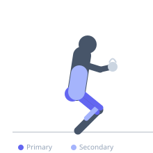
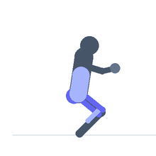

Exercise guide / Cossack Squat with Kettlebell Counterbalance
Cossack Squat with Kettlebell Counterbalance
A cossack squat performed holding a kettlebell at chest height (goblet position) as a counterbalance. The forward weight of the kettlebell acts as a counterbalance, allowing a more upright torso and deeper squat depth than the unloaded version for many people. This makes the goblet cossack an effective teaching tool for those who lack the mobility to perform an upright unloaded cossack squat, while simultaneously providing a strength stimulus for the deep lateral squat pattern.
Primary muscles
adductor magnus
gluteus maximus
rectus femoris
Secondary muscles
soleus
erector spinae
Stabilizers
transverse abdominis
Equipment
Kettlebell


Starting position
- Hold a kettlebell at chest height in the goblet position (bell up, hands around the horns, elbows pointing down). Stand with feet 2-2.5 times shoulder-width, toes slightly out.
Setup
- Choose a kettlebell that is light enough to hold comfortably at chest for the duration of the exercise. 8-16 kg is typical for most users.
Steps
- Step 1: Hold the kettlebell at chest height. Shift weight to the right and descend into the right cossack squat, keeping the kettlebell at chest level.
- Step 2: At the bottom, the kettlebell helps keep the torso upright by acting as a counterbalance.
- Step 3: Hold the bottom position for 3-5 seconds, feeling the deep adductor and glute stretch.
- Step 4: Drive through the right foot to shift to the left side, descending into the left cossack. Alternate sides in a continuous flow.
Coaching cues
- Let the kettlebell pull you upright — do not fight it
- Drive the squat heel into the floor
- Feel deeper into the stretch at the bottom than you can in the unloaded version
Breathing
- Exhale as you descend. Breathe at the bottom. Inhale as you transition through center.
Range of motion
- Full depth lateral squat with heel flat. The kettlebell counterbalance should allow greater depth than unloaded.
Tempo
- 3-5s hold at each bottom position.
Common mistakes
- Letting the kettlebell drift too far forward (pressing it rather than holding it at chest)
- Heel of the squatting leg lifting off the floor — the counterbalance should help prevent this
- Moving too quickly without pausing at the bottom of each side
Safety
- If the goblet hold creates shoulder discomfort, switch to the unloaded cossack or the overhead plate version
- Start with a lighter kettlebell to feel the counterbalance effect before increasing load
Training
- mobility: 5–10 reps
- mobility: 2–3 sets
- Rest: {'mobility': 60}